CS 180 · Project 4A · Fall 2026
Image Warping
and Mosaicing
https://izatr2004.github.io/project-website/proj4/
From paired landmarks to projective alignment, rectified images, and blended panoramas.
A.1: Source photographs - Harbor and cathedral
The harbor pair has a broad overlap containing the cathedral, waterfront buildings, and water. Stationary architecture supplies the landmarks; drifting ice and reflections are less reliable matching targets.
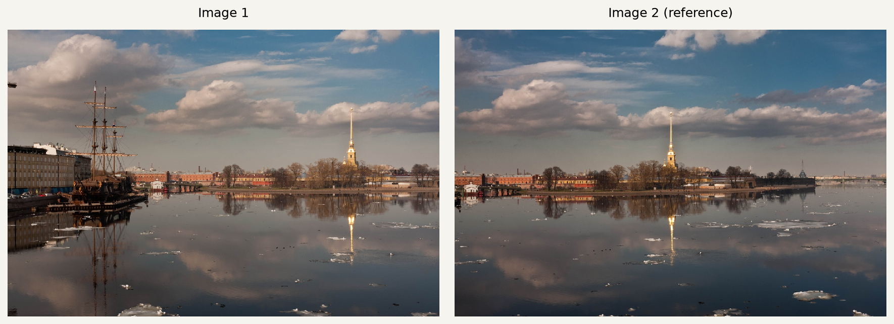
Source: OpenCV extra test-data repository. Images are resized to at most 1200 pixels on the longest side; the original fields of view are retained.
These panorama experiments use credited public sample photographs. The building rectification reuses a personal photograph from Project 0. The assignment asks for most data to be personally acquired; the current panorama sets do not meet that capture requirement.
A.1: Source photographs - Stone aqueduct
The aqueduct pair extends the view from the left bank toward the trees on the right. Repeated arches make incorrect pairings easy, so the landmarks include distinct stone junctions and features at different heights.
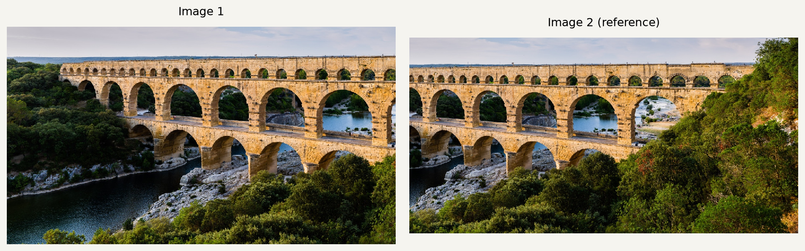
Source: OpenCV extra test-data repository. Images are resized to at most 1200 pixels on the longest side; the original fields of view are retained.
A.1: Source photographs - Church interior
The church pair changes the view toward the right aisle. The window, doorway, ceiling, and columns provide structure at different heights. The dark interior and clipped lamps make appearance-based matching less stable than in the outdoor pairs.
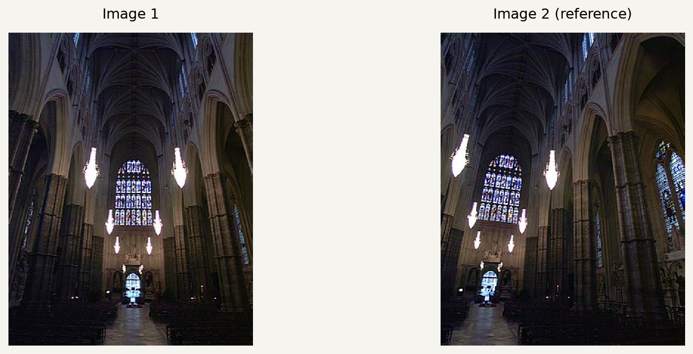
Source: OpenCV extra test-data repository. Images are resized to at most 1200 pixels on the longest side; the original fields of view are retained.
A.2: Recovering a homography
A homography maps a source point (x, y) to a reference point (u, v). Dividing by the last homogeneous coordinate gives two equations per match. Setting h33 = 1 leaves eight unknowns.
u = (h11 x + h12 y + h13) / (h31 x + h32 y + 1) v = (h21 x + h22 y + h23) / (h31 x + h32 y + 1) [ x y 1 0 0 0 -ux -uy ] h = u [ 0 0 0 x y 1 -vx -vy ] h = v h = [h11 h12 h13 h21 h22 h23 h31 h32]^T A has shape (2N, 8); b = [u1 v1 ... uN vN]^T. h = argmin ||Ah - b||^2
computeH(im1_pts, im2_pts) builds this system and calls NumPy's least-squares solver. Coordinates are first centered and scaled so their mean distance from the origin is sqrt(2). If Hn is the solution in these normalized coordinates, the pixel-coordinate matrix is H = T2-1 Hn T1. Finally, H is divided by its bottom-right entry.
Each panorama uses more than four landmarks. Corresponding structures were identified by inspecting both images. Local normalized patch correlation then adjusted their coordinates within small neighborhoods. Ambiguous pairs were corrected before the final fit. The saved configuration contains the rough initial pairs, refinement centers, and final subpixel coordinates.
| Pair | Matches | RMS error (px) | Max error (px) |
|---|---|---|---|
| Harbor and cathedral | 12 | 0.113 | 0.211 |
| Stone aqueduct | 12 | 0.066 | 0.159 |
| Church interior | 14 | 0.561 | 0.774 |
Errors are Euclidean forward reprojection residuals on the fitted, refined landmarks. They measure fit consistency, rather than accuracy on independent test points.
A.2: Correspondences - Harbor and cathedral
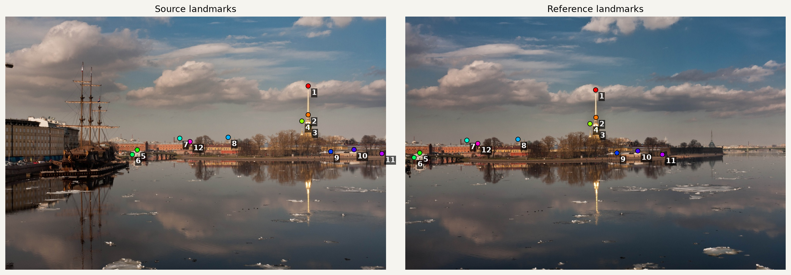
H = [ 1.2447827 0.0090524 -471.4113681 ] [ 0.0800243 1.1575001 -53.6445136 ] [ 0.0002070 -0.0000006 1.0000000 ]
The matrix maps image 1 into image 2. The 12 matches form a 24 by 8 least-squares system. The forward reprojection RMS residual is 0.113 pixels.
A.2: Correspondences - Stone aqueduct
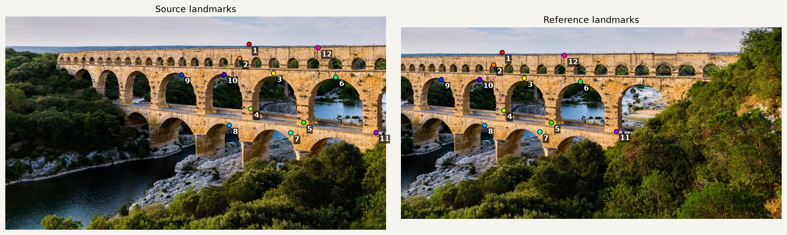
H = [ 0.9018431 0.0004366 -373.0170586 ] [ 0.0004214 0.9005456 -0.4673182 ] [ 0.0000013 0.0000014 1.0000000 ]
The matrix maps image 1 into image 2. The 12 matches form a 24 by 8 least-squares system. The forward reprojection RMS residual is 0.066 pixels.
A.2: Correspondences - Church interior
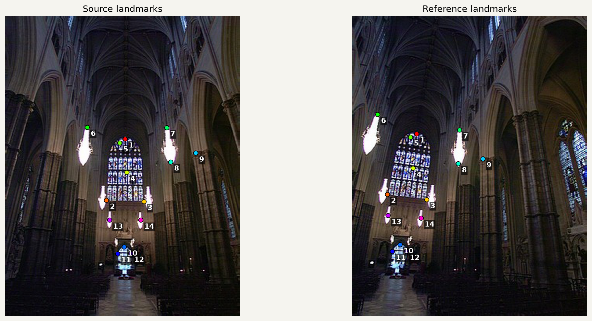
H = [ 1.2510889 -0.1655088 -145.6936036 ] [ 0.3392310 1.1404135 -121.3884066 ] [ 0.0004655 -0.0000339 1.0000000 ]
The matrix maps image 1 into image 2. The 14 matches form a 28 by 8 least-squares system. The forward reprojection RMS residual is 0.561 pixels.
A.3: Inverse warping and interpolation
Both warp functions use inverse mapping. First, project the four source corners through H to determine a destination bounding box. Floor the minimum coordinates and ceil the maxima. Negative destination coordinates are preserved through a stored canvas offset.
For each integer destination pixel center, apply H-1 and divide by the resulting homogeneous coordinate. Sample the source only when that coordinate lies inside its valid pixel-center rectangle. A separate Boolean mask distinguishes missing samples from valid black pixels.
[sx sy 1]^T ~ H^-1 [dx dy 1]^T
Nearest: I(round(sx), round(sy))
Bilinear: x0=floor(sx), y0=floor(sy)
a=sx-x0, b=sy-y0
I(sx,sy) = (1-a)(1-b) I(x0,y0)
+ a(1-b) I(x0+1,y0)
+ (1-a)b I(x0,y0+1)
+ ab I(x0+1,y0+1)
The four bilinear weights sum to one. At the last valid row or column, the neighbor indices clamp to the image boundary. The implementation processes rows in chunks so intermediate coordinate arrays stay small. It uses NumPy arithmetic for both interpolation methods.
For rectification, four selected corners map to the corners of a rectangular target. Only that target is sampled. Unlike panorama fitting, these four exact corner constraints have no redundancy; the assumed rectangle and chosen aspect ratio determine the result.
A.3: Rectification - Glass building facade


The selected facade is rectangular. Its physical aspect ratio is unknown; 3:2 is a display choice. The output is 900 by 600 pixels.
The receding facade becomes a frontal view: its window divisions are nearly vertical, and the floor bands become nearly horizontal. Bilinear sampling makes the thin frame boundaries smoother.
A.3: Rectification - Newspaper masthead
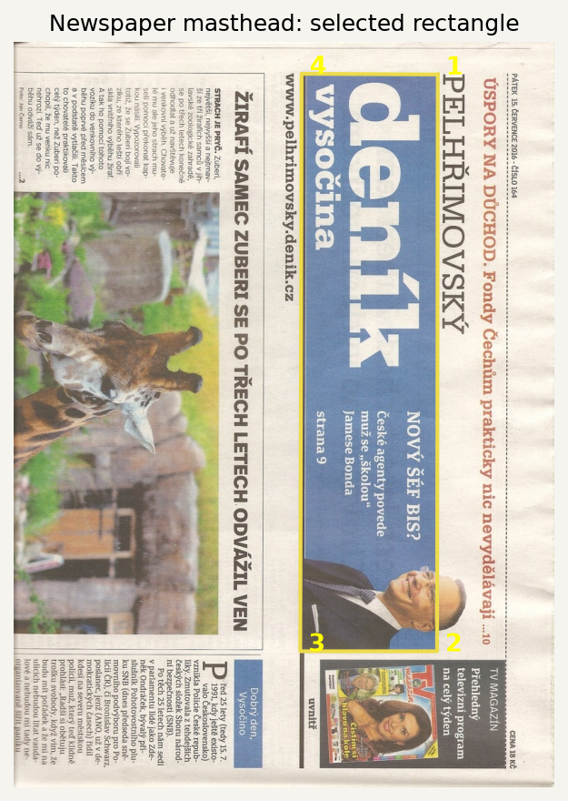
The printed masthead is rectangular. A wide 1100:280 target restores readable orientation; physical proportions are not independently measured. The output is 1100 by 280 pixels.
The masthead rotates into reading orientation and fills a rectangular canvas. Bilinear sampling smooths the letter contours and paper texture; nearest neighbor retains harder, more irregular pixel steps.
A.3: Quality and speed

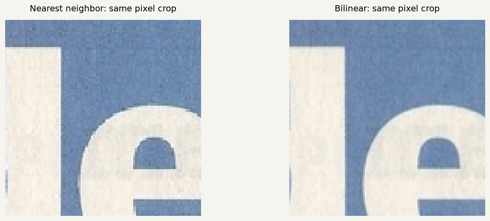
| Rectification | Nearest | Bilinear | Time ratio |
|---|---|---|---|
| Glass building facade | 17.53 ms | 50.35 ms | 2.87x |
| Newspaper masthead | 11.14 ms | 27.63 ms | 2.48x |
These are local CPU medians over five calls after one excluded warm-up call, including inverse coordinate generation and sampling. Both methods use the same target canvas. Bilinear sampling costs more because it gathers four pixels and combines their weights; nearest neighbor gathers one.
The facade crop shows stair steps along diagonal frame edges with nearest neighbor. Bilinear interpolation softens these steps but slightly blurs fine texture. Neither method alone prevents aliasing when a transform strongly shrinks an image; that would require an additional low-pass treatment.
A.4: Blending into a mosaic
Each mosaic keeps image 2 in its original projection and warps image 1 into it. The destination canvas is the union of all transformed image corners. Every source is sampled into this one common coordinate system.
In each source image, a weight rises with distance from the closest image border. The weight map is warped with the same H and multiplied by the validity mask. At each destination pixel, normalize the weights of all valid images and form their weighted sum:
w_i = warped source-border distance * validity_i M(x,y) = sum_i [w_i(x,y) * I_i(x,y)] / sum_i w_i(x,y)
Where only one image exists, that image keeps its original sampled color. Where neither exists, the result is transparent. Feathering spreads a color transition across the overlap rather than producing the hard boundary of overwrite compositing. It does not correct a geometric error or remove moving objects.
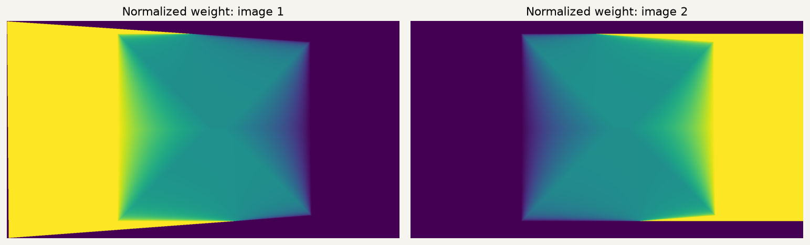
No exposure correction or pyramid blend is applied. This keeps the effect of weighted averaging visible in the comparisons. The geometric registration is performed by the recovered homography in every example.
A.4: Mosaic - Harbor and cathedral
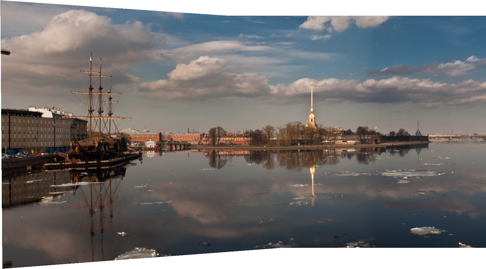
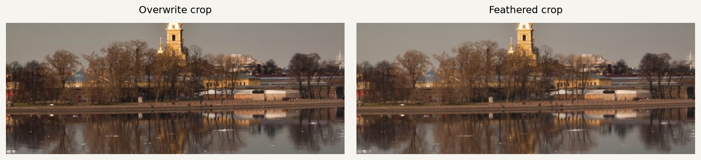
The cathedral and waterfront align without a visible doubled spire. Feathering reduces the color boundary across the buildings and sky. The original photographs differ slightly in exposure, so a broad tone change remains. Ice and reflections can differ between captures even when the stationary architecture is aligned.
Canvas: 1672 x 927 pixels. The source views appear in A.1; the landmarks and H appear in A.2.
A.4: Mosaic - Stone aqueduct
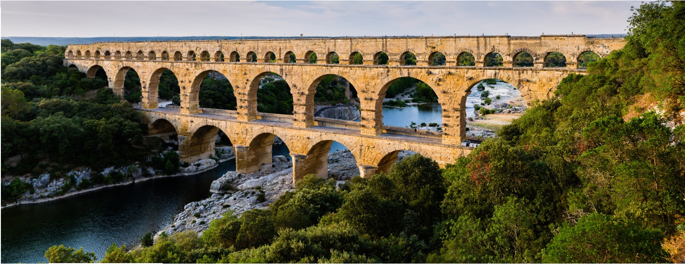
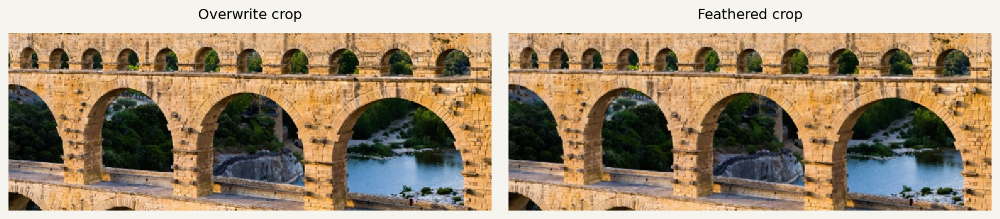
The arch edges and horizontal stone courses continue across the overlap. Feathering reduces the abrupt color change from one view to the other. The irregular outer boundary comes from the union of the two projective image footprints, rather than filling missing pixels with invented scene content.
Canvas: 1574 x 608 pixels. The source views appear in A.1; the landmarks and H appear in A.2.
A.4: Mosaic - Church interior
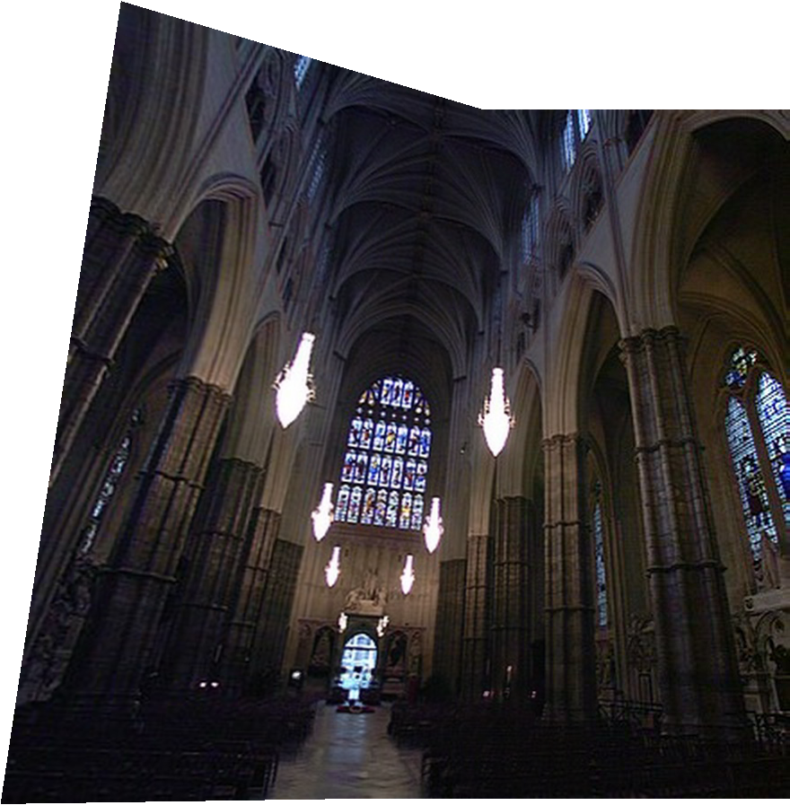
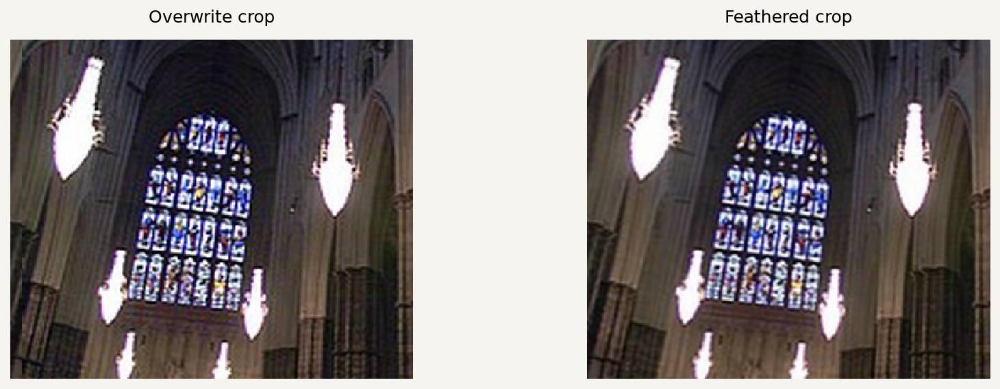
The doorway and stained-glass window align in the overlap, and the right-hand view adds the side window and aisle. Feathering softens the exposure boundary in the columns. The oblique outer walls stretch in the planar reference projection, and the original low-resolution, dark photographs limit detail.
Canvas: 880 x 897 pixels. The source views appear in A.1; the landmarks and H appear in A.2.
What I learned and sources
The largest initial errors came from correspondence choice. Repeated stone details and nearly collinear building points can support a plausible matrix while distorting the rest of an image. Inspecting the warped structures and correcting ambiguous pairs mattered more than changing the blend.
Inverse warping gives a defined source lookup for every destination pixel and avoids the holes caused by forward splatting. The mask is just as important as the color array: black image content must remain valid, while empty projective margins must not darken the blend.
The interpolation comparison makes a separate tradeoff visible. Nearest neighbor is fast and preserves hard pixel values; bilinear interpolation uses more work to make subpixel movement look smoother. Blending then addresses another issue, the boundary between already registered images.
Sources and reproducibility
- a2.png: OpenCV extra test-data repository; supplied sample photograph. Source.
- a3.png: OpenCV extra test-data repository; supplied sample photograph. Source.
- boat1.jpg: OpenCV extra test-data repository; supplied sample photograph. Source.
- boat2.jpg: OpenCV extra test-data repository; supplied sample photograph. Source.
- building.jpg: Personal building photograph reused from Project 0. Source.
- newspaper1.jpg: OpenCV extra test-data repository; supplied sample photograph. Source.
- s1.jpg: OpenCV extra test-data repository; supplied sample photograph. Source.
- s2.jpg: OpenCV extra test-data repository; supplied sample photograph. Source.


The exact resized inputs and SHA-256 checksums are recorded in sources.json. main.py reproduces the figures and metrics; geometry.py contains computeH and both inverse-warp implementations. The code is submitted privately to Gradescope. Part B will be appended to this same webpage. Optional A.5 extensions are not included in this CS180 Part A report.